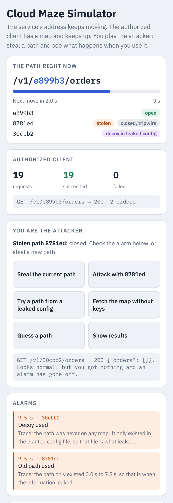
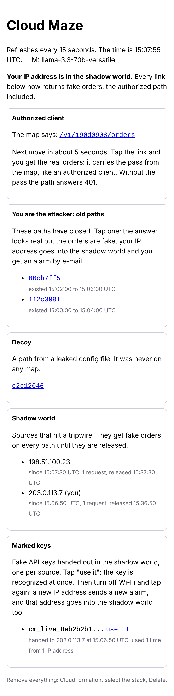

Open source · AWS
Cloud Maze
Your API moves every two minutes. Attackers walk into a maze.
- Old paths become tripwires that show when they leaked
- Attackers land in a shadow world of fake data
- Marked keys follow them to any IP address
Your API moves every two minutes. Attackers walk into a maze.

